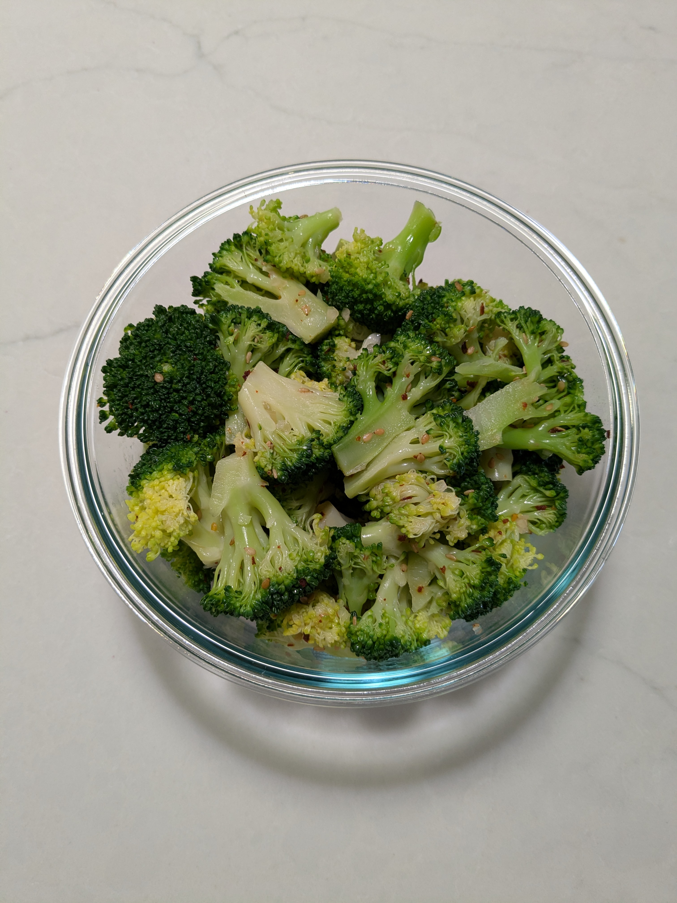

Broccoli Banchan (Beurokolli-namul) (V)

Ingredients
- 1 head of broccoli, cut into florets
- 1 tbs sesame oil
- ½ tsp kosher salt
- 2 cloves minced garlic
- Toasted sesame seeds and gochugaru, to taste
Directions
- Blanch: Cook broccoli in boiling water for 1½ minutes, then transfer immediately to an ice bath.
Season: Drain well and toss with sesame oil, salt, garlic, sesame seeds, and chili flakes.
Serve: Serve as a side dish with rice.
Chef's Notes
- For softer broccoli, blanch for an additional minute
The Gumbo Page
Michael Fritsche
mbf@fritsche.org